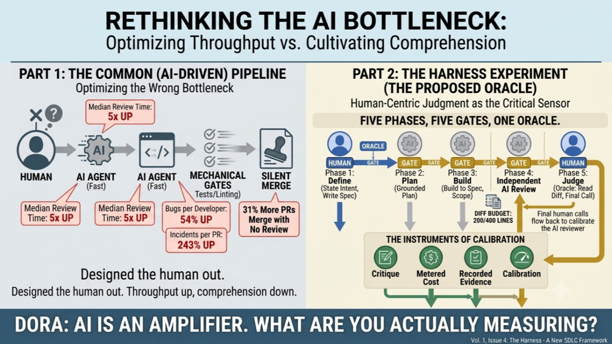

We spent a year optimising the wrong bottleneck.
The harness discourse has been relentless - blueprints, schematics, thought leadership. Impressive engineering, most of it. But read the designs closely and you notice what they're all quietly aiming at: getting the developer out of the pipeline.
The logic seemed sound. Building dropped from days to minutes, and the human became the slow part. The bottleneck. So we designed the human out.
Then the telemetry arrived.
Faros AI instrumented 22,000 developers across 4,000+ teams. Moving from low to high AI adoption: task completion per developer up 34%, epics up 66%. Real gains. Also: bugs per developer up 54%, incidents per pull request up 243%, median review time up 5x, and 31% more PRs merging with no review at all.
Nobody decided to stop reviewing. Reviewers simply couldn't keep pace, and unread merges became normal. We knew this failure before AI. The 2,000-line PR lands in your inbox, and what follows is frustration, cognitive overload, and a silent rubber stamp. The difference is that it used to be the exception. Now it's the throughput model.
The bottleneck didn't disappear. It moved to review and integration - and we'd already removed the person who was supposed to be standing there when it arrived.
Two things worth saying plainly.
First: the human was never the bottleneck. The human is the missing oracle.
We have fast, cheap oracles for correctness. Do the tests pass? Does it lint? Machine-verifiable in seconds. We have no oracle at all for maintainability, intent, or design - and no benchmark I'm aware of currently measures them. GitClear's analysis of 623 million code changes shows what fills that gap: duplication up 81%, refactoring down 70%, error-masking constructs up 47%. Code that looks right and is structurally wrong.
Designing the human out doesn't remove a cost. It removes the only sensor we have for the slowest and most expensive failure mode. "Humans first" isn't sentiment or ethics-washing. It's a claim about where verification capability actually resides right now.
Second: we're borrowing against comprehension and calling it velocity.
Anthropic ran a controlled trial in January. Two groups, same unfamiliar library. The AI-assisted group finished marginally faster and scored 50% on comprehension. The manual group scored 67%. Seventeen points, on code they had written minutes earlier (this is a vendor publishing a result against it's own commercial interest).
That debt doesn't show up in your DORA metrics. It shows up at 2am when nobody on the call can reason about the system they shipped.
The industry response is to build faster agents. So I built the opposite experiment. A harness that puts the human at the centre - not to slow things down, but to make judgment cheap, timely and measurable rather than optional. You can check out the harness here.
Plain bash. Deliberately crude. Built to learn, not to scale.
The rules:
- Agents don't move artefacts through the SDLC. They hit mechanical gates.
- Humans state intent, write the spec, define acceptance criteria, and read the diff.
- Route every check to the cheapest reliable verifier - mechanical gates for what's machine-checkable, calibrated LLM judges only after validation against human labels with explicit thresholds, humans for intent and design.
- Diff budget: 200 lines. (Which became 400, excluding tests). If it's more than 400 lines, the feature was scoped wrong. The gate fails and the work gets split.
- Only iterate on the harness with confirmed evidence and root cause.
Thirty minutes on an approved spec and a design sketch turns a six-hour adversarial review into a twenty-minute confirmation. The human isn't reviewing more. They're reviewing earlier, where a one-line correction prevents two thousand lines of rework.
237 minutes. 12 features. One engineer, no control group - an experiment, not evidence. I'm publishing the method so it can be argued with.
DORA's finding is that AI is an amplifier: it magnifies whatever your organisation already is. If your answer to a 243% rise in incidents per PR is to remove the last human who might have caught them, the amplifier is working exactly as designed.
What are you actually measuring?